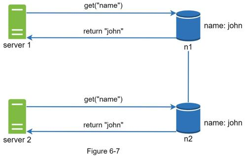
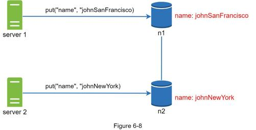
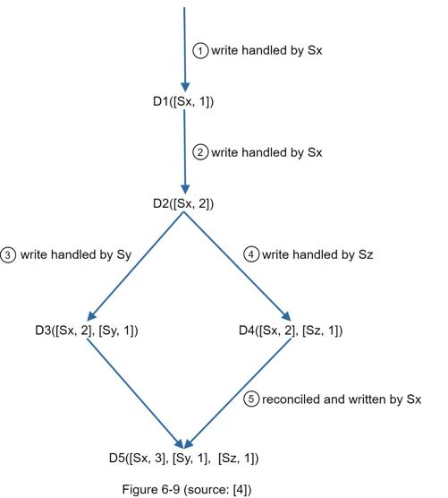
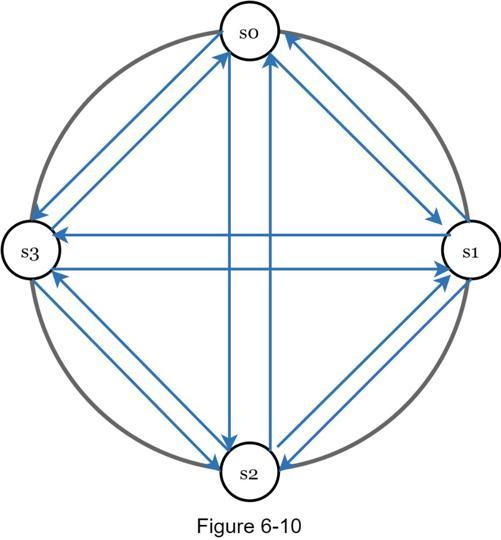
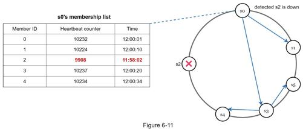
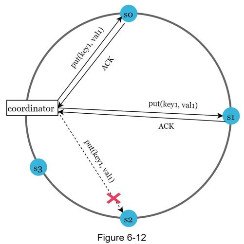
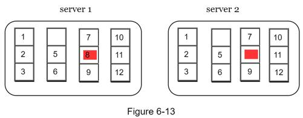
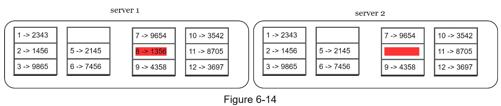
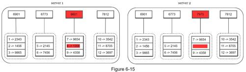
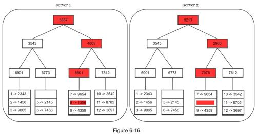

Replication gives high availability but causes inconsistencies among replicas. Versioning and vector clocks are used to solve inconsistency problems. Versioning means treating each data modification as a new immutable version of data. Before we talk about versioning, let us use an example to explain how inconsistency happens:
As shown in Figure 6-7, both replica nodes n1 and n2 have the same value. Let us call this value the original value. Server 1 and server 2 get the same value for get(“name”) operation.

Next, server 1 changes the name to “johnSanFrancisco”, and server 2 changes the name to “johnNewYork” as shown in Figure 6-8. These two changes are performed simultaneously. Now, we have conflicting values, called versions v1 and v2.

In this example, the original value could be ignored because the modifications were based on it. However, there is no clear way to resolve the conflict of the last two versions. To resolve this issue, we need a versioning system that can detect conflicts and reconcile conflicts. A vector clock is a common technique to solve this problem. Let us examine how vector clocks work.
A vector clock is a [server, version] pair associated with a data item. It can be used to check if one version precedes, succeeds, or in conflict with others.
Assume a vector clock is represented by D([S1, v1], [S2, v2], …, [Sn, vn]), where D is a data item, v1 is a version counter, and s1 is a server number, etc. If data item D is written to server Si, the system must perform one of the following tasks.
•Increment vi if [Si, vi] exists.
•Otherwise, create a new entry [Si, 1].
The above abstract logic is explained with a concrete example as shown in Figure 6-9.

1. A client writes a data item D1 to the system, and the write is handled by server Sx, which now has the vector clock D1[(Sx, 1)].
2. Another client reads the latest D1, updates it to D2, and writes it back. D2 descends from D1 so it overwrites D1. Assume the write is handled by the same server Sx, which now has vector clock D2([Sx, 2]).
3. Another client reads the latest D2, updates it to D3, and writes it back. Assume the write is handled by server Sy, which now has vector clock D3([Sx, 2], [Sy, 1])).
4. Another client reads the latest D2, updates it to D4, and writes it back. Assume the write is handled by server Sz, which now has D4([Sx, 2], [Sz, 1])).
5. When another client reads D3 and D4, it discovers a conflict, which is caused by data item D2 being modified by both Sy and Sz. The conflict is resolved by the client and updated data is sent to the server. Assume the write is handled by Sx, which now has D5([Sx, 3], [Sy, 1], [Sz, 1]). We will explain how to detect conflict shortly.
Using vector clocks, it is easy to tell that a version X is an ancestor (i.e. no conflict) of version Y if the version counters for each participant in the vector clock of Y is greater than or equal to the ones in version X. For example, the vector clock D([s0, 1], [s1, 1])] is an ancestor of D([s0, 1], [s1, 2]). Therefore, no conflict is recorded.
Similarly, you can tell that a version X is a sibling (i.e., a conflict exists) of Y if there is any participant in Y's vector clock who has a counter that is less than its corresponding counter in X. For example, the following two vector clocks indicate there is a conflict: D([s0, 1], [s1, 2]) and D([s0, 2], [s1, 1]).
Even though vector clocks can resolve conflicts, there are two notable downsides. First, vector clocks add complexity to the client because it needs to implement conflict resolution logic.
Second, the [server: version] pairs in the vector clock could grow rapidly. To fix this problem, we set a threshold for the length, and if it exceeds the limit, the oldest pairs are removed. This can lead to inefficiencies in reconciliation because the descendant relationship cannot be determined accurately. However, based on Dynamo paper [4], Amazon has not yet encountered this problem in production; therefore, it is probably an acceptable solution for most companies.
As with any large system at scale, failures are not only inevitable but common. Handling failure scenarios is very important. In this section, we first introduce techniques to detect failures. Then, we go over common failure resolution strategies.
In a distributed system, it is insufficient to believe that a server is down because another server says so. Usually, it requires at least two independent sources of information to mark a server down.
As shown in Figure 6-10, all-to-all multicasting is a straightforward solution. However, this is inefficient when many servers are in the system.

A better solution is to use decentralized failure detection methods like gossip protocol. Gossip protocol works as follows:
•Each node maintains a node membership list, which contains member IDs and heartbeat counters.
•Each node periodically increments its heartbeat counter.
•Each node periodically sends heartbeats to a set of random nodes, which in turn propagate to another set of nodes.
•Once nodes receive heartbeats, membership list is updated to the latest info.
•If the heartbeat has not increased for more than predefined periods, the member is considered as offline.

As shown in Figure 6-11:
•Node s0 maintains a node membership list shown on the left side.
•Node s0 notices that node s2’s (member ID = 2) heartbeat counter has not increased for a long time.
•Node s0 sends heartbeats that include s2’s info to a set of random nodes. Once other nodes confirm that s2’s heartbeat counter has not been updated for a long time, node s2 is marked down, and this information is propagated to other nodes.
After failures have been detected through the gossip protocol, the system needs to deploy certain mechanisms to ensure availability. In the strict quorum approach, read and write operations could be blocked as illustrated in the quorum consensus section.
A technique called “sloppy quorum” [4] is used to improve availability. Instead of enforcing the quorum requirement, the system chooses the first W healthy servers for writes and first R healthy servers for reads on the hash ring. Offline servers are ignored.
If a server is unavailable due to network or server failures, another server will process requests temporarily. When the down server is up, changes will be pushed back to achieve data consistency. This process is called hinted handoff. Since s2 is unavailable in Figure 6-12, reads and writes will be handled by s3 temporarily. When s2 comes back online, s3 will hand the data back to s2.

Hinted handoff is used to handle temporary failures. What if a replica is permanently unavailable? To handle such a situation, we implement an anti-entropy protocol to keep replicas in sync. Anti-entropy involves comparing each piece of data on replicas and updating each replica to the newest version. A Merkle tree is used for inconsistency detection and minimizing the amount of data transferred.
Quoted from Wikipedia [7]: “A hash tree or Merkle tree is a tree in which every non-leaf node is labeled with the hash of the labels or values (in case of leaves) of its child nodes. Hash trees allow efficient and secure verification of the contents of large data structures”.
Assuming key space is from 1 to 12, the following steps show how to build a Merkle tree. Highlighted boxes indicate inconsistency.
Step 1: Divide key space into buckets (4 in our example) as shown in Figure 6-13. A bucket is used as the root level node to maintain a limited depth of the tree.

Step 2: Once the buckets are created, hash each key in a bucket using a uniform hashing method (Figure 6-14).

Step 3: Create a single hash node per bucket (Figure 6-15).

Step 4: Build the tree upwards till root by calculating hashes of children (Figure 6-16).

To compare two Merkle trees, start by comparing the root hashes. If root hashes match, both servers have the same data. If root hashes disagree, then the left child hashes are compared followed by right child hashes. You can traverse the tree to find which buckets are not synchronized and synchronize those buckets only.
Using Merkle trees, the amount of data needed to be synchronized is proportional to the differences between the two replicas, and not the amount of data they contain. In real-world systems, the bucket size is quite big. For instance, a possible configuration is one million buckets per one billion keys, so each bucket only contains 1000 keys.
Data center outage could happen due to power outage, network outage, natural disaster, etc. To build a system capable of handling data center outage, it is important to replicate data across multiple data centers. Even if a data center is completely offline, users can still access data through the other data centers.